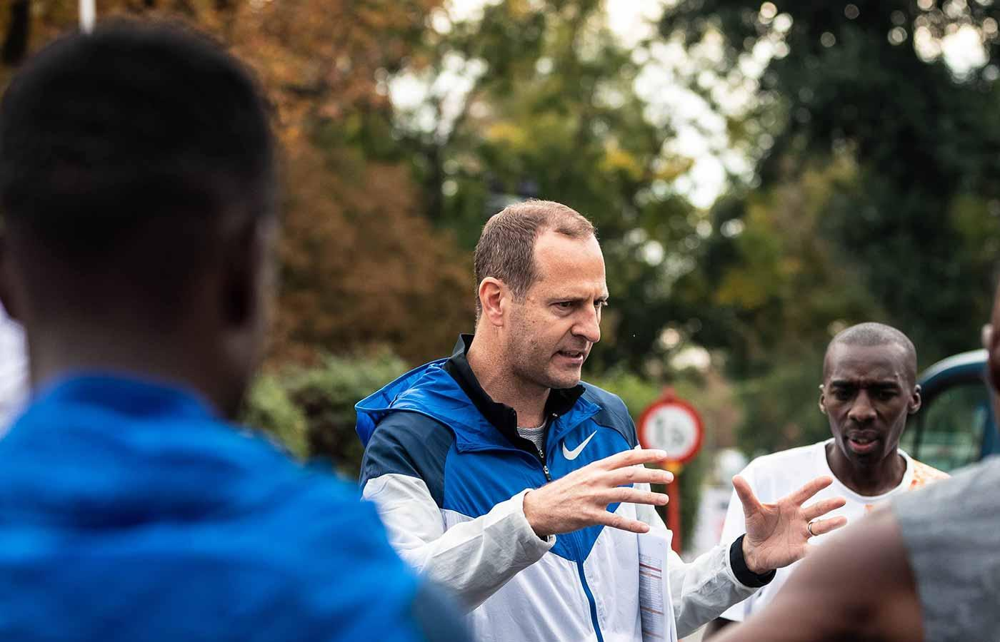
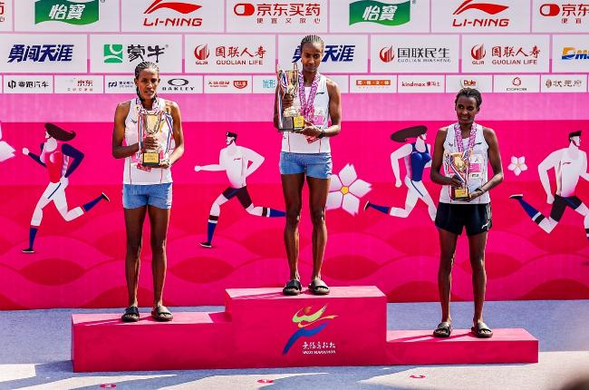
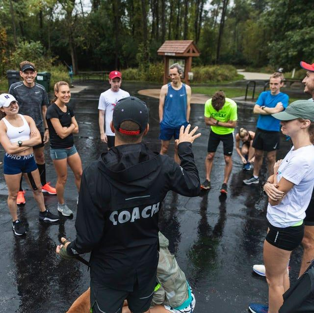
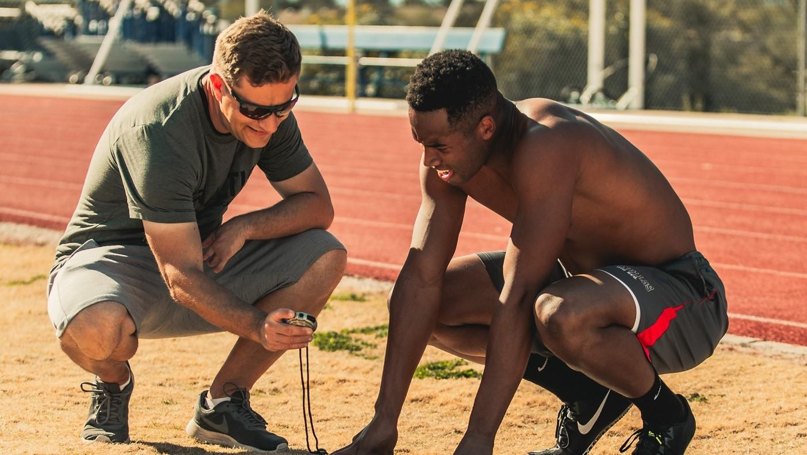
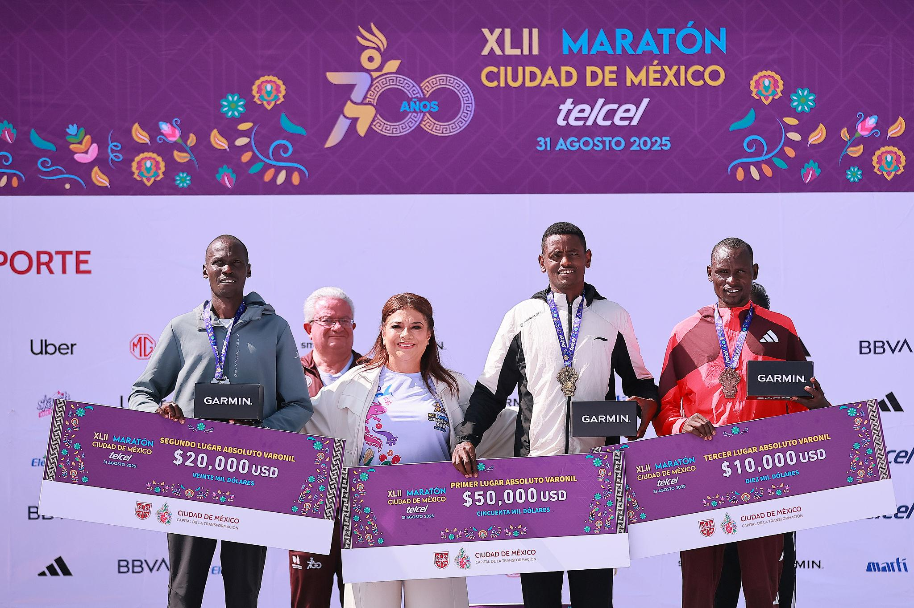
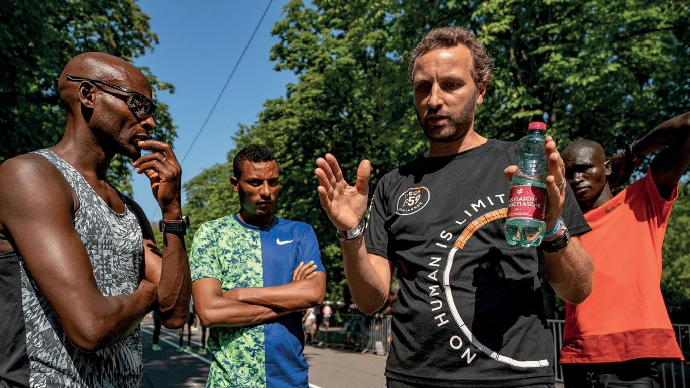
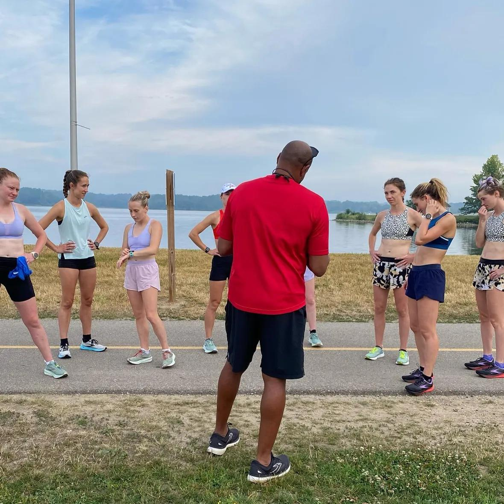
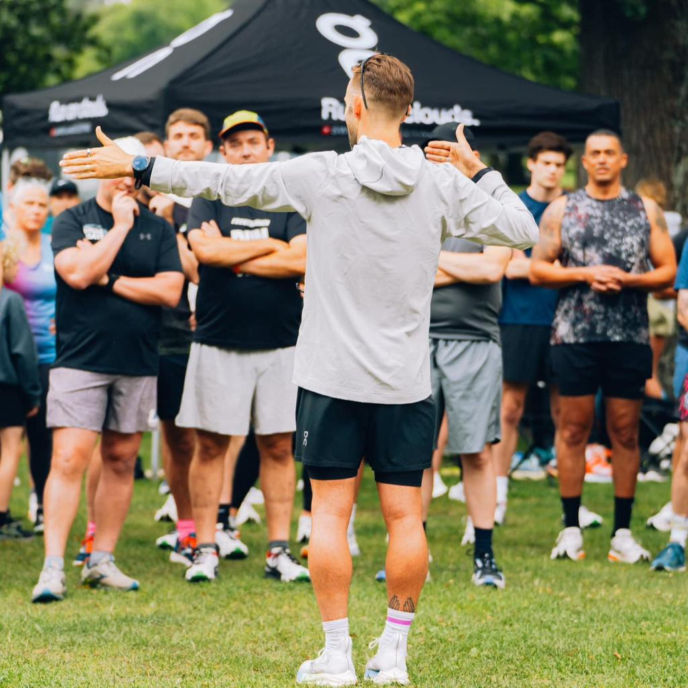

HEAD OF DISTANCE
MARATHON & TRACK
ARUNACHALAM M.
14 years coaching elite and master runners. Former 2:18 marathoner with World Athletics Level 3 certification.
“Consistency turns dreams into repeatable pacing.”

A club for every pace, every goal and every kind of runner.
Stride Club began with a simple belief: running should be accessible, rewarding and better when shared. We bring together first-time runners, experienced racers and everyone in between.
Our coaches combine practical sports science with a human approach. We listen first, plan thoughtfully and celebrate progress that lasts beyond race day.
Meet us on a run ↗
We believe good training is consistent, inclusive and built around the person doing the work.
Every runner deserves a welcoming space, a thoughtful coach and a group that cheers for their progress.
Training should have a reason. We balance effort, recovery and consistency to help you improve sustainably.
Personal bests are brilliant, but confidence, health and the joy of movement matter every day.
We learn your experience, goals, schedule and what motivates you.
Your coach shapes a realistic plan with clear weekly priorities.
Train, review, adapt and build strength with the club behind you.
Mark every milestone, from your first kilometre to race day.


Our team brings experience across road running, track, strength and endurance. More importantly, they know that no two runners are the same.
See how we coach ↗Certified endurance coaches, sports science practitioners and experienced marathoners dedicated to helping you thrive.

14 years coaching elite and master runners. Former 2:18 marathoner with World Athletics Level 3 certification.

Lactate threshold mapping specialist and advisor on fueling strategies and endurance physiology.

6-Star World Marathon Majors finisher passionate about helping runners take their very first stride.

Track and field sprint specialist focusing on ground reaction forces, acceleration drive and mobility.